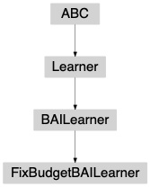

fixbudget package¶
-
class
banditpylib.learners.bestarmid.fixbudget.FixBudgetBAILearner(pars)[source]¶ Bases:
banditpylib.learners.bestarmid.utils.BAILearnerBase class for fixed budget best arm identification learners
-
__init__(pars)[source]¶ Learner initialization
- Parameters
pars (dict) –
{ # Name appeared in the output figure. Default # value `self._name`. "name": string, }
-
reset(bandit, stop_cond)[source]¶ Reset self. This function should be called before the start of the game.
- Parameters
bandit (object) – environment
stop_cond (dict) – stop conditions
-
property
goal¶ goal of the learner
- Type
str
-